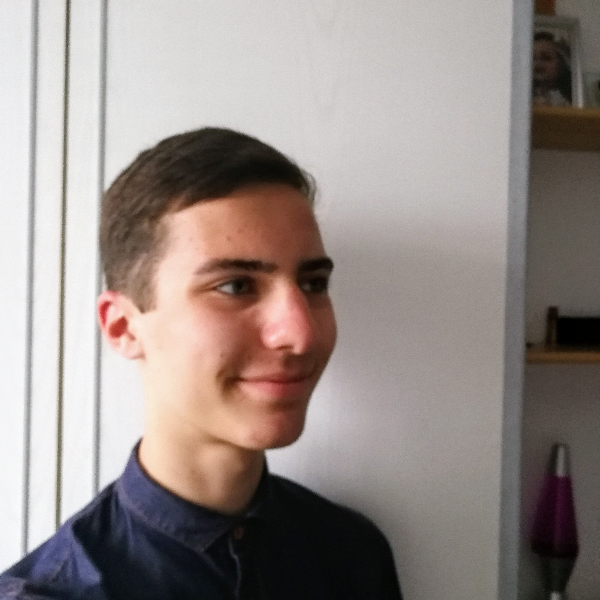

PORTFOLIO
Welcome to my website! This is a page where I blog about topics that interest me and offer services such as tutoring and web-design. Having recently completed my A-Levels, I am currently undertaking a gap year where I aim to expand my understanding of the world through reading, travel, and internships. I am eager to gain new experiences and perspectives on topics which interest me; economics, business, politics, law, languages, computer-science. If you are interested in reading on trends and insights within these topics, please check out the ‘blog section’. The study of these subjects has been an integral part of my life over the past few years - whether it be through ‘hablando español’ or debating on tax reform. They are topics which I will explore in greater depth when I will attend a top University in the coming year, but I also seek to gain a practical understanding through work before then.

I am studying hard to ensure success at my A-Levels - Mathematics, Computing, Spanish and French - seeking to continue to study either Economics or Computer Science at Degree Level – looking to study at one of the best Russell Group Universities, including UCL, Imperial and Oxford. I strive to deliver effective communication and team-work, and have been called a ‘natural leader’ as a result, along with my determination and excitement in subjects, where I achieved 10A* GCSE grades. An example of my leadership was the Canon ‘Make the Grade’ Enterprise project, where I lead my team to 1st place out of 5. My vibrant, vital personality and my hard work are skills I will continue to demonstrate to achieve my aims of studying at a top university and improve further. Enjoy exploring my page and feel free to contact me!